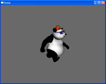
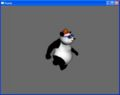

Panda3D Manual: DisplayRegion 1.jpg
{kind=link}
{kind=link}
{kind=link}

{kind=link}
No higher resolution available.
DisplayRegion_1.jpg (214 × 170 pixels, file size: 4 KB, MIME type: image/jpeg)
This image was generated with the following code:
from direct.directbase.DirectStart import *
from pandac.PandaModules import *
from direct.actor.Actor import Actor
a = Actor('panda.egg', {'walk' : 'panda-walk.egg'})
a.pose('walk', 0)
a.reparentTo(render)
dlight = NodePath(DirectionalLight('dlight'))
dlight.reparentTo(base.cam)
render.setLight(dlight)
base.disableMouse()
camera.setPosHpr(-41, -23, 18, -61, -15, 0)
def makeNewDr():
dr2 = base.win.makeDisplayRegion(0.1, 0.4, 0.2, 0.6)
dr2.setClearColor(VBase4(0, 0, 0, 1))
dr2.setClearColorActive(True)
dr2.setClearDepthActive(True)
render2 = NodePath('render2')
cam2 = render2.attachNewNode(Camera('cam2'))
dr2.setCamera(cam2)
env = loader.loadModel('environment.egg')
env.reparentTo(render2)
cam2.setPos(-22.5, -387.3, 58.1999)
return cam2
def splitScreen(cam, cam2):
dr = cam.node().getDisplayRegion(0)
dr2 = cam2.node().getDisplayRegion(0)
dr.setDimensions(0, 0.5, 0, 1)
dr2.setDimensions(0.5, 1, 0, 1)
cam.node().getLens().setAspectRatio(float(dr.getPixelWidth()) / float(dr.getPixelHeight()))
cam2.node().getLens().setAspectRatio(float(dr2.getPixelWidth()) / float(dr2.getPixelHeight()))
#cam2 = makeNewDr()
#splitScreen(base.cam, cam2)
run()
File history
Click on a date/time to view the file as it appeared at that time.
| Date/Time | Thumbnail | Dimensions | User | Comment | |
|---|---|---|---|---|---|
| current | 08:39, 5 October 2008 |  | 214 × 170 (4 KB) | Drwr (Talk | contribs) | |
| 08:31, 5 October 2008 |  | 324 × 257 (6 KB) | Drwr (Talk | contribs) |
- Edit this file using an external application (See the setup instructions for more information)
{kind=link}
File usage
The following page links to this file:
| Back to the Manual |
© Carnegie Mellon University 2010